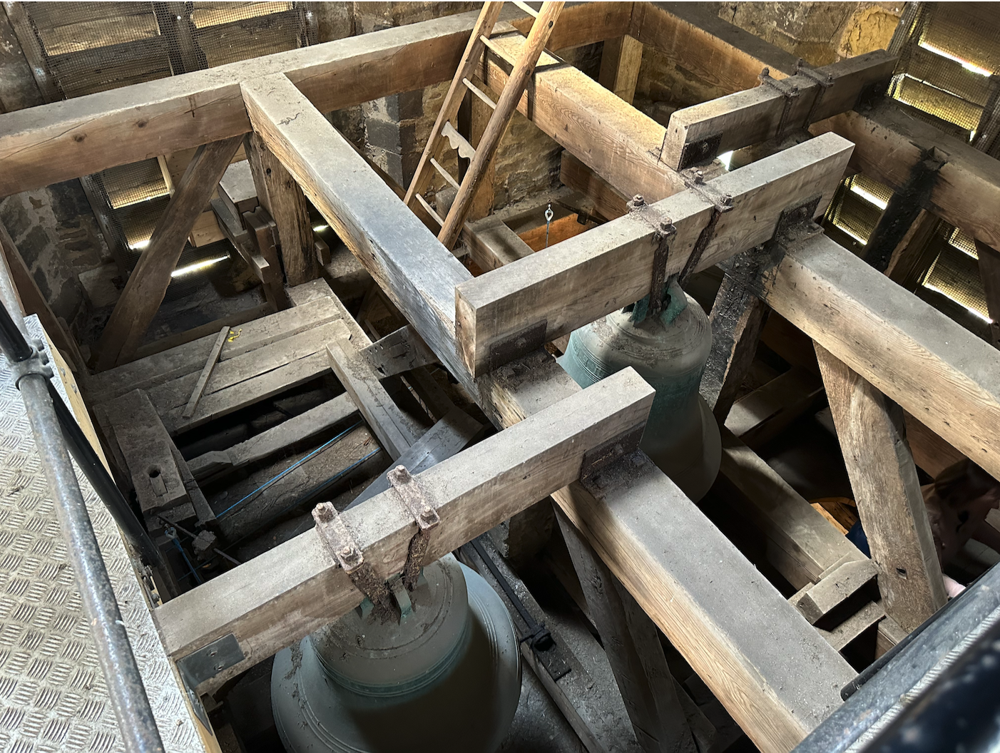
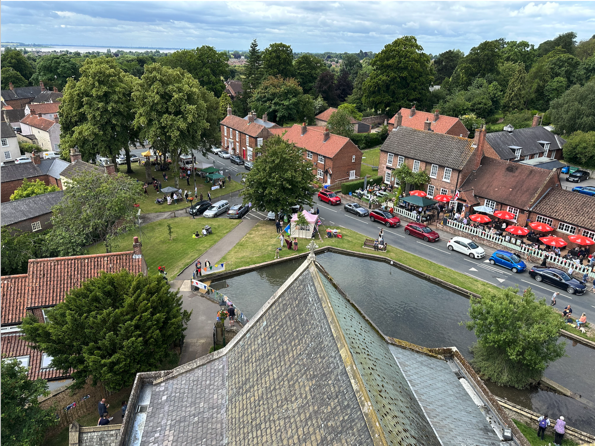

Church Tower
In addition to the everyday and ongoing pastoral care and prayer that St Helen’s Church quietly offers in acts of service to the villages of Melton and Welton, there are dedicated teams available to reach out to in times of need.
St. Helen’s Church is a Grade 2 listed building. According to Historic England, who maintain the register of listed buildings, the central part of the church was built in the 15th century although there is some evidence of there being a religious building on the site from the 9th century. This 15th century building, which was a smaller cruciform shape than today, included the present tower. This tower originally had a pinnacle on each corner. When the church was saved from demolition by the Patron, Sophia Broadley, and restored in 1862-4, the pinnacles were removed.
The tower has two floors below the roof and access to the first floor is up a clockwise spiral staircase of 38 steps. This first floor contains the village memorial clock built in 1921 by, or for, William Potts of Leeds. Originally there was only one clock face on the east wall of the tower but a second clock face was later installed on the west wall and driven by a complex arrangement of gears and connecting roads from the clock..
Access to the second floor and to the roof was originally by a timber and an aluminium ladder respectively but these were replaced in 2013 by fixed steel ladders and walkways. The second floor houses a substantial timber framework holding the four church bells. The bells are fixed and thus struck rather than being rung. Each bell is struck by a hammer attached to a rope which is pulled from a frame in the chamber below, which also houses the clock winding mechanism. The clock strikes one of the bells each hour. The four bells are:
- Bell no. 1: Cast by John Potter, York, circa 1370, 34″ diameter, 6 3/4 cwt. (340kg), note A#
- Bell no. 2: Cast by J Horton, York, circa 1450, 36 3/4″ diameter, 8 1/2 cwt. (430kg), note G#
- Bell no. 3: Cast by C & Q Mears, London, 1848, 30 1/2″ diameter, 5 1/4 cwt. (270kg), note C
- Bell no. 4: Cast by J I Harrison, Barrow, 1764, 29 3/4″ diameter, 4 3/4 cwt. (240kg), note C#
The tower roof is set within and below the castellated stone parapet and contains a perimeter drainage channel with a gullet in each corner connected to internal downpipes. A safety handrail was attached to the perimeter walls in 2013. In the centre of the roof is a flagpole, which is still used today.
